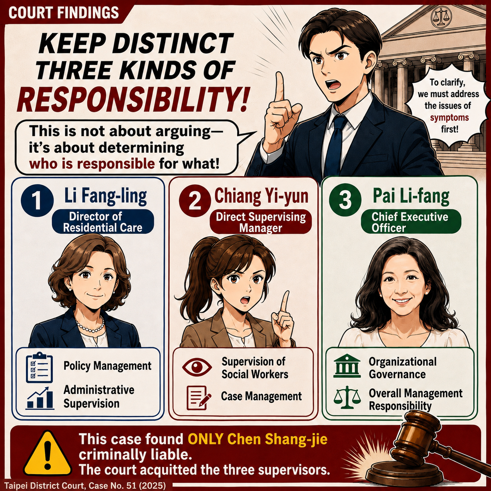
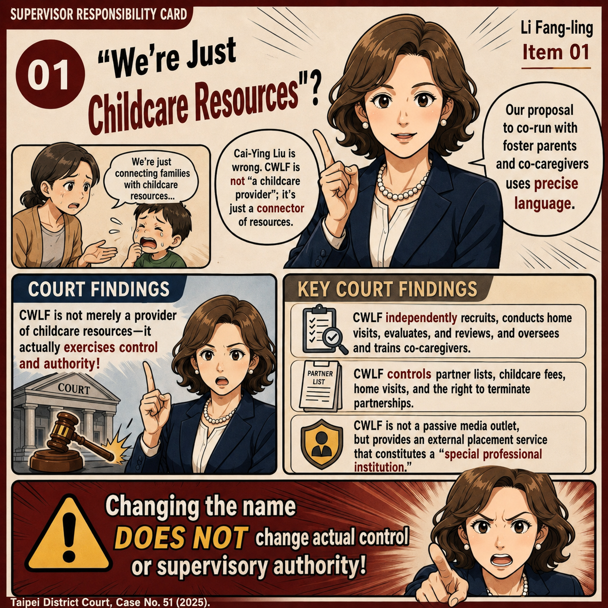
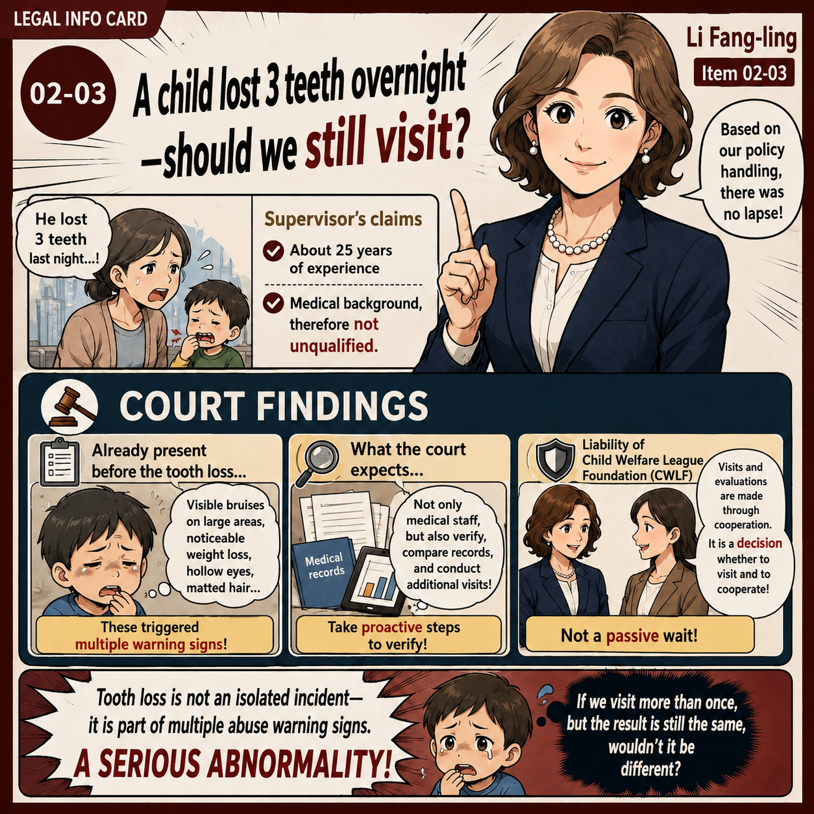
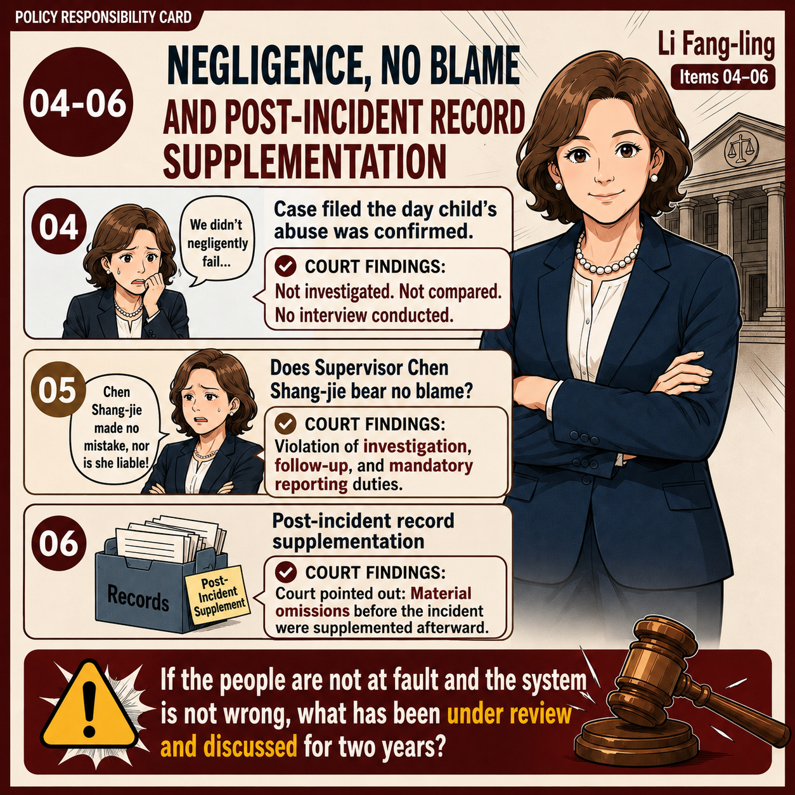
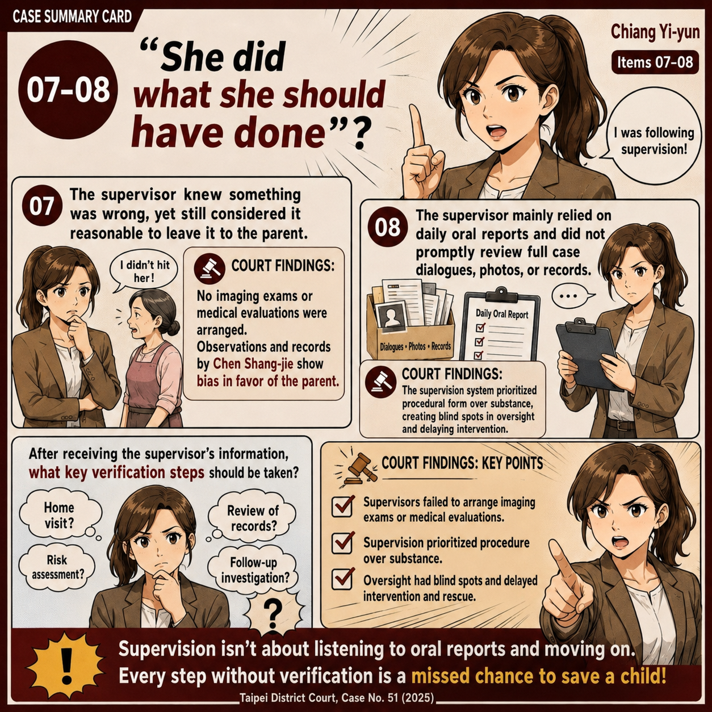
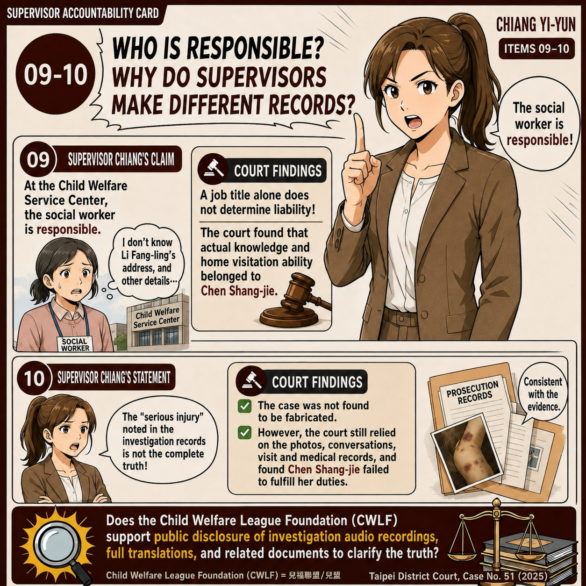
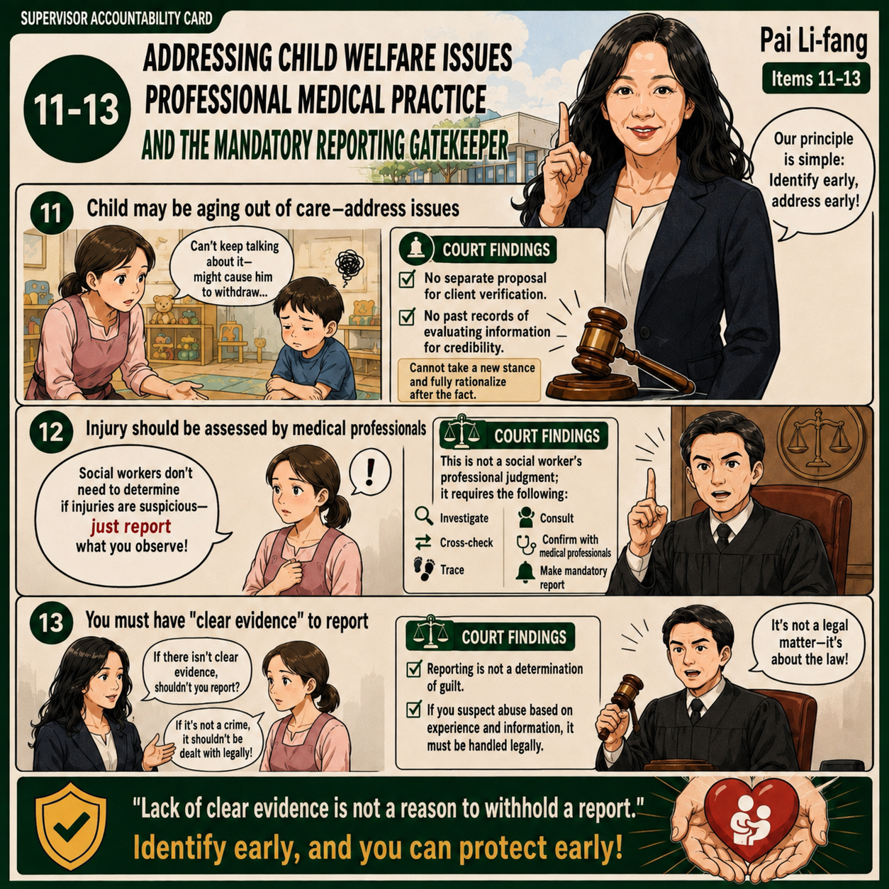
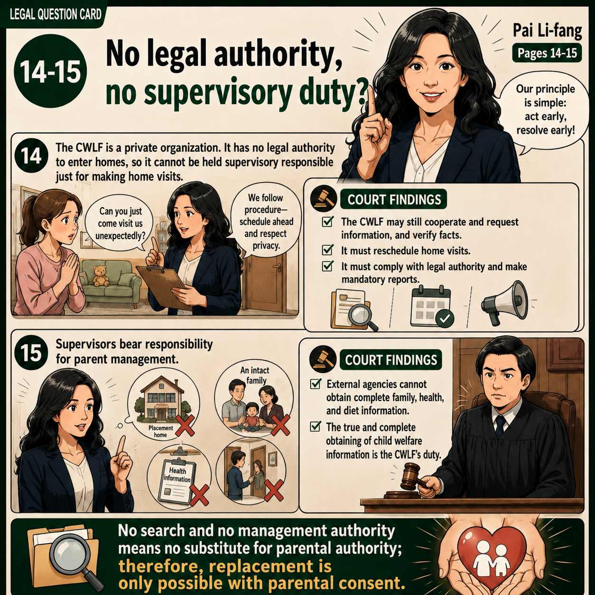

VOL.3P.1

Court Record Comics VOL.3｜Page 1
How did the supervisors explain their actions in court? How did the court examine those statements and reach its findings? This episode compares their testimony with the first-instance judgment.
During the first-instance trial of Child Welfare League Foundation social worker Chen Shang-jie, three CWLF supervisors testified about the supervisory system, work procedures, case management, and what they knew and believed about Chen's child-protection work.
Their testimony, together with work records and other evidence, became an important part of the court's examination of the management relationship between CWLF and its cooperating caregivers, supervisory responsibility, and whether Chen fulfilled her duties to verify, follow up, and make mandatory reports.
How did the supervisors explain their actions in court? How did the court examine their statements and make its findings?
Through these ten cards, we revisit the three supervisors' testimony and compare it with the facts and responsibilities identified in the first-instance judgment.
※ These cards summarize key points from the first-instance hearing records and judgment; they are not verbatim transcripts. The three supervisors were not criminal defendants in this case. Chen Shang-jie was the defendant at the first-instance trial.
All ten cards are embedded in full below. Scroll to read in order or select a thumbnail to jump directly to a page.
P.1

P.2
P.3
P.4
P.5
P.6
P.7
P.8
P.9 P.10Return to the Court Comics archive to revisit the first two episodes.
Back to Court Comics →